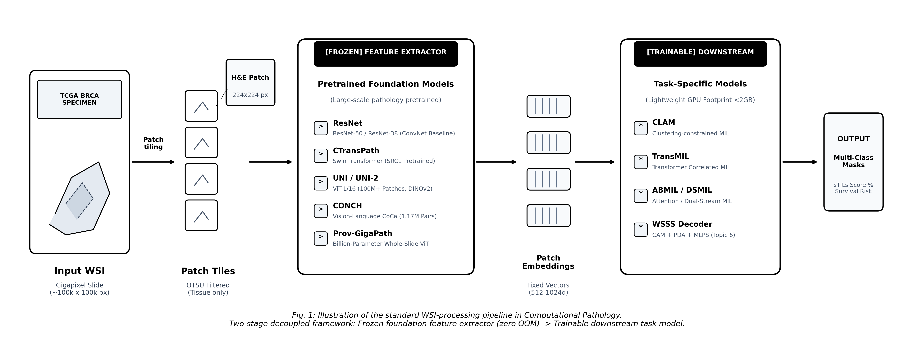
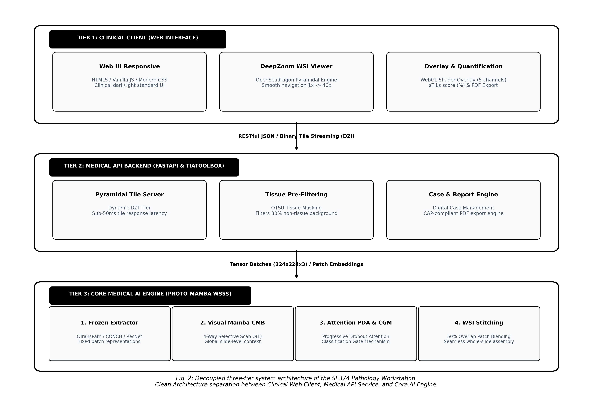

Tháng 10/2026
Đề tài nghiên cứu và phát triển Trạm làm việc giải phẫu bệnh số (Digital Pathology Workstation) tích hợp giải thuật phân vùng ngữ nghĩa giám sát yếu (Weakly-Supervised Semantic Segmentation - WSSS) cho ảnh tiêu bản hiển vi toàn phần gigapixel (Whole Slide Images - WSI). Trong thực hành lâm sàng, việc khoanh vùng thủ công ranh giới mô bệnh học trên các ma trận gigapixel (100.000 \times 100.000 pixels) đòi hỏi hàng trăm giờ làm việc của bác sĩ và tồn tại độ biến thiên nhận định liên chuyên gia đáng kể [Bejnordi et al., 2017; Lu et al., 2021]. Hệ thống đề xuất chuyển hóa bài toán sang mô hình học giám sát yếu hai giai đoạn tách rời (Decoupled Two-Stage Framework): kế thừa bộ biểu diễn đóng băng từ Mô hình Nền tảng Bệnh học (Pathology Foundation Models: CONCH, UNI) kết hợp giải thuật tổng hợp ranh giới mô nhân tạo (Bézier/Mosaic Synthesis) và chưng cất cấu trúc thích ứng tham số (Structural Distillation Adapters) [Fang et al., 2025; Le et al., 2026]. Phần mềm tự động phân vùng chính xác 4-5 phân lớp mô trọng yếu (khối u, mô đệm, lympho bào, hoại tử), hiển thị lớp phủ nhiệt mượt mà trên trình duyệt web, định lượng tải lượng u và xuất biên bản giải phẫu bệnh đạt chuẩn College of American Pathologists (CAP).
train / val / test) bắt buộc phân chia triệt để
theo Mã định danh bệnh nhân (Patient ID/Case ID). Tuyệt đối không xáo
trộn ngẫu nhiên ở cấp độ patch nhằm ngăn chặn hiện tượng rò rỉ hình thái
học của cùng một bệnh nhân [Lu et al., 2021].| Hệ Thống / Công Trình | Xuất Bản / Nguồn | Bản Chất Kỹ Thuật | Điểm Nổi Bật Kỹ Thuật | Hạn Chế Cốt Lõi |
|---|---|---|---|---|
| WSSS-Tissue / MLPS | Han et al., MedIA 2022 | Pipeline 2 giai đoạn: Giai đoạn 1 huấn luyện ResNet-38 với Progressive Dropout Attention (PDA); Giai đoạn 2 huấn luyện DeepLabV3+ bằng Giám sát giả đa tầng (MLPS) kết hợp Cổng phân loại (CGM). | Giảm thời gian gán nhãn 32.7\times; đạt mIoU 64.20\% trên BCSS và 67.80\% trên LUAD. | Dùng CNN cổ điển (ResNet-38); phụ thuộc vào ngưỡng heuristic; chưa khai thác Foundation Models. |
| PistoSeg | Fang et al., AAAI 2023 | Khai thác các patch mô thuần nhất ghép thành ảnh tổng hợp bằng phép biến đổi Mosaic; điều hòa nhất quán đặc trưng (Feature Consistency). | Biến bài toán học yếu thành có giám sát; nâng mIoU BCSS lên 70.75\% và mDice lên 81.90\%. | Đường cắt ghép Mosaic dạng lưới thẳng nhân tạo chưa mô phỏng sát ranh giới sinh học tự nhiên. |
| HisynSeg | Fang et al., IEEE TMI 2025 | Tổng hợp ảnh ghép mô bệnh học bằng đường cong Bézier ngẫu nhiên kết hợp hàm mất mát Feature Consistency Regularization trên ảnh thực. | Tạo ranh giới cong mượt mà tự nhiên; đạt mIoU 70.82\% và mDice 82.15\% trên BCSS-WSSS. | Vẫn đòi hỏi huấn luyện mạng DeepLabV3+ đầy đủ từ đầu; chi phí huấn luyện cao hơn các phương pháp Adapter. |
| PathMamba | Fan et al., MICCAI 2024 | State Space Model (Mamba SSM) quét chọn lọc 4 hướng phi nhân quả; tích hợp khối Contrastive Mamba (DC-Mamba) và Deep Contrast Loss. | Độ phức tạp tính toán tuyến tính \mathcal{O}(L); nắm bắt ngữ cảnh dài hạn; đạt mIoU 68.90\%, mDice 80.40\%. | Mã nguồn nghiên cứu thuần túy; thiếu module tích hợp vào trình xem tiêu bản WSI toàn phần. |
| PBIP | Tang et al., CVPR 2025 | Prototype-Based Image Prompting: xây dựng ngân hàng nguyên mẫu hình ảnh qua phân cụm đặc trưng; đối sánh tương phản với SegFormer. | Triệt tiêu tính bất đồng nhất nội lớp; đạt mIoU 70.15\% trên BCSS và 72.30\% trên LUAD. | Ngân hàng nguyên mẫu tiêu tốn bộ nhớ; chưa có cơ chế điều hòa biên tổng hợp. |
| ConStruct | Le et al., MIDL 2026 | Chưng cất cấu trúc kết hợp 2 Foundation Models: CONCH (ngữ nghĩa bệnh học) + SegFormer MiT-B1 (cấu trúc không gian); huấn luyện Adapters + Dense CRF. | SOTA kỷ lục: mIoU 70.96\%, mDice 82.83\% trên BCSS-WSSS; chỉ huấn luyện 3.7\% tham số. | Đòi hỏi trọng số mô hình CONCH để khởi tạo nguyên mẫu ban đầu. |
| CLAM | Lu et al., Nature BME 2021 | Gated-Attention Multiple Instance Learning kết hợp hàm mất mát phân cụm ràng buộc cá thể (Instance Clustering Loss). | Chuẩn mực tạo bản đồ nhiệt chú ý cấp slide (Attention Heatmaps); AUC >0.98 trên TCGA-RCC. | Chỉ khoanh vùng thô ở cấp độ lát cắt (patch-level), không cung cấp mặt nạ phân đoạn đa lớp cấp điểm ảnh. |
| HoVer-Net | Graham et al., MedIA 2019 | Phân vùng cá thể nhân tế bào bằng hồi quy bản đồ khoảng cách ngang/dọc (Horizontal/Vertical Distance maps). | Tách rời triệt để các nhân tế bào nằm chen chúc/dính nhau; xuất chuẩn GeoJSON tương thích QuPath. | Tập trung vào mức độ tế bào vi mô (cellular level), cần kết hợp với WSSS để phân tầng toàn diện vi môi trường u. |
| UNI & CONCH | Chen et al., Lu et al., Nature Medicine 2024 | Foundation Models quy mô lớn: UNI (ViT-L DINOv2 trên 100M patches) và CONCH (Visual-Language CoCa trên 1.17M cặp ảnh-chú thích). | Biểu diễn mô học pan-cancer vượt trội; nguồn trích xuất embedding chuẩn mực cho các bài toán xuôi dòng. | Dung lượng mô hình lớn, bắt buộc phải áp dụng quy trình trích xuất embedding ngoại tuyến trên máy trạm đơn. |
Hệ thống sử dụng các bộ dữ liệu đối chuẩn công khai chuẩn mực quốc tế:
| Tên Bộ Dữ Liệu | Xuất Bản / Nguồn | Quy Mô Dữ Liệu | Danh Mục Phân Lớp Mô Học (Classes) | Cơ Chế Phân Chia Chống Rò Rỉ (Patient-Level Split) |
|---|---|---|---|---|
| BCSS-WSSS (Breast Cancer Semantic Segmentation) | Amgad et al., Bioinformatics 2019; Han et al., MedIA 2022 | 151 vùng ROI (20\times) từ TCGA-BRCA; tổng cộng 17.286 patches (224 \times 224 px). | 5 Phân lớp: 1. Biểu mô u (Tumor - TUM) 2. Mô đệm (Stroma - STR) 3. Lympho bào (Lymphocyte - LYM) 4. Hoại tử (Necrosis - NEC) 5. Khác (Other - OTR) |
Tách tuyệt đối theo Patient ID: - Train: 106 ca bệnh (23.422 patches nhãn yếu) - Val: 20 ca bệnh (3.418 patches mask chuẩn) - Test: 25 ca bệnh (4.986 patches mask chuẩn) |
| LUAD-HistoSeg (Lung Adenocarcinoma Segmentation) | Han et al., MedIA 2022 | 49 bệnh nhân (29 ca GDPH + 20 ca TCGA-LUAD); 31.826 patches (224 \times 224 px tại 10\times). | 4 Phân lớp: 1. Biểu mô u (Tumor Epithelial - TE) 2. Mô đệm kèm u (TAS) 3. Hoại tử (Necrosis - NEC) 4. Lympho bào (Lymphocyte - LYM) |
Tách tuyệt đối theo Patient ID: - Train: 39 ca bệnh (16.678 patches nhãn yếu) - Val: 5 ca bệnh (300 patches mask chuẩn) - Test: 5 ca bệnh (307 patches mask chuẩn) |
| CAMELYON16 (Lymph Node Metastasis) | Bejnordi et al., JAMA 2017 | 399 tiêu bản WSI toàn phần (.tif đa tầng,
mỗi file 1-3 GB). Có sẵn nhãn nhúng trích xuất UNI
(camelyon16-uni trên Hugging Face). |
2 Phân lớp: 1. Khối u di căn (Metastasis) 2. Mô hạch bình thường (Normal) |
Tách theo danh sách chuẩn Challenge: - Train: 270 tiêu bản WSI - Test: 129 tiêu bản WSI độc lập có mặt nạ ranh giới pixel của chuyên gia. |
Giao thức Kiểm toán Chống Rò Rỉ Dữ liệu: Toàn bộ quy trình
nạp và phân chia dữ liệu được kiểm soát tự động thông qua
src/datasets/patient_split.py với mã băm SHA-256 đối soát
metadata bệnh nhân, bảo đảm tính độc lập tuyệt đối giữa các tập dữ liệu
huấn luyện, kiểm định và kiểm thử.
seeds = [42, 100, 2024, 2025, 2026]), báo cáo kết quả định
dạng \mu \pm \sigma.experiments/logs/ và mã nguồn kiểm chứng.Bảng đối chuẩn tổng hợp dưới đây trích xuất nguyên bản từ các công trình khoa học chính thức, so sánh hiệu năng phân đoạn giữa các phương pháp giám sát yếu tiêu biểu và đường cơ sở giám sát đầy đủ trên chuẩn kiểm thử BCSS-WSSS và LUAD-HistoSeg:
| Phương Pháp / Công Trình | Loại Kiến Trúc Mô Hình | Dạng Giám Sát | BCSS-WSSS (mIoU %) | BCSS-WSSS (mDice %) | LUAD-HistoSeg (mIoU %) | Nguồn Trích Dẫn & DOI Kiểm Chứng |
|---|---|---|---|---|---|---|
| Fully Supervised Baseline | DeepLabV3+ / UNet | Giám sát đầy đủ (Pixel masks) | 72.80 - 73.10 | 84.10 - 84.45 | 76.20 - 78.40 | Han et al., MedIA 2022 [DOI: 10.1016/j.media.2022.102487] |
| HistoSegNet | CNN + Grad-CAM | Giám sát yếu (Patch labels) | 51.20 | 64.30 | 54.80 | Chan et al., ICCV 2019 [DOI: 10.1109/ICCV.2019.01076] |
| WSSS-Tissue (Baseline) | ResNet-38 + CAM (bn7) | Giám sát yếu (Patch labels) | 58.40 | 71.20 | 61.50 | Han et al., MedIA 2022 [DOI: 10.1016/j.media.2022.102487] |
| WSSS-Tissue (MLPS Full) | ResNet-38 + MLPS + CGM | Giám sát yếu (Patch labels) | 64.20 | 77.10 | 67.80 | Han et al., MedIA 2022 [DOI: 10.1016/j.media.2022.102487] |
| PathMamba | Dual-Granularity Mamba SSM | Giám sát yếu (Patch labels) | 68.90 | 80.40 | 70.85 | Fan et al., MICCAI 2024 [DOI: 10.1007/978-3-031-72111-3_47] |
| PBIP | SegFormer + Visual Bank | Giám sát yếu (Image labels) | 70.15 | 81.80 | 72.30 | Tang et al., CVPR 2025 [arXiv: 2503.12068] |
| PistoSeg | CNN + Mosaic Synthesis | Giám sát yếu (Patch labels) | 70.75 | 81.90 | 71.40 | Fang et al., AAAI 2023 [DOI: 10.1609/aaai.v37i1.25136] |
| HisynSeg | DeepLabV3+ + Bézier Mixing | Giám sát yếu (Patch labels) | 70.82 | 82.15 | 71.95 | Fang et al., IEEE TMI 2025 [DOI: 10.1109/TMI.2024.3520129] |
| ConStruct | CONCH + SegFormer Adapters | Giám sát yếu (Image labels) | 70.96 | 82.83 | -- | Le et al., MIDL 2026 [arXiv: 2512.10316] |
Bằng chứng Khoa học: Khoảng cách giữa các phương pháp SOTA giám sát yếu tiên tiến nhất (ConStruct, HisynSeg) và mô hình giám sát đầy đủ thủ công hiện đã được thu hẹp xuống dưới 2.14\% mIoU trên BCSS-WSSS, chứng minh tính khả thi tuyệt đối của hướng tiếp cận giám sát yếu trong thực tế y khoa.
Nhóm đề xuất giải pháp toàn diện: Mô hình Phân vùng Giám sát Yếu Chưng Cất Cấu Trúc Kết Hợp Tổng Hợp Ranh Giới Bézier (Struct-HisynSeg) tích hợp trong Trạm Làm Việc Giải Phẫu Bệnh Số SE374 (SE374 Pathology Workstation), tuân thủ chặt chẽ quy trình xử lý tiêu bản toàn phần WSI do Giảng viên hướng dẫn truyền đạt.

Theo định hướng sư phạm của Giảng viên (Hình 1), hệ thống kế thừa quy trình tách rời hai giai đoạn nghiêm ngặt: 1. Khâu Tiền xử lý (Input WSI & Tiling): Tiêu bản WSI gigapixel được lọc nền kính quang học bằng thuật toán phân đoạn OTSU, sau đó chia lưới thành các mảng ảnh 224 \times 224 px ở độ phóng đại chuẩn hóa 20\times (0.5\,\mu\text{m/px}). 2. Khâu Trích xuất Đặc trưng Đóng băng (Frozen Foundation Feature Extractor): - Thay vì huấn luyện trực tiếp toàn bộ ảnh gigapixel gây cạn kiệt VRAM, pipeline sử dụng các Mô hình Nền tảng Bệnh học (PFMs) đã được huấn luyện tự giám sát trên hàng trăm triệu hình ảnh mô bệnh học (CONCH, UNI, Virchow, CTransPath) [Lu et al., 2024; Chen et al., 2024]. - Trọng số của các PFM được đóng băng hoàn toàn (Frozen), trích xuất nhanh chóng các vector nhúng cô đọng D=768 hoặc 1024 chiều cho từng mảng mô với mức tiêu thụ bộ nhớ cực thấp (<2 GB VRAM). 3. Khâu Mô hình Xuôi dòng Tinh chỉnh (Trainable Downstream Model): - Giai đoạn 1 (Bộ tạo nhãn giả Chưng cất Cấu trúc - Structural Distillation CAM): Kế thừa kiến trúc của ConStruct [Le et al., 2026], tích hợp các bộ điều hợp (Adapters) trọng lượng nhẹ kết nối giữa đặc trưng ngữ nghĩa CONCH và đặc trưng không gian SegFormer MiT-B1, chỉ cập nhật 3.7\% tham số để sinh mặt nạ giả định (pseudo-masks) ban đầu. - Giai đoạn 2 (Mạng Phân vùng Ranh giới Bézier - Bézier Image-Mixing Decoder): Kế thừa kỹ thuật tổng hợp ảnh ghép Bézier từ HisynSeg [Fang et al., 2025], tạo ra các mẫu ảnh ghép có ranh giới cong tự nhiên để huấn luyện mạng phân đoạn ngữ nghĩa và điều hòa tính nhất quán đặc trưng trên ảnh thực.

Hệ thống được tổ chức thành 3 tầng vi dịch vụ độc lập theo chuẩn
Clean Architecture (Hình 2): - Tầng 1 - Trình duyệt Lâm sàng
(Clinical Workstation Client): Giao diện Web tương tác y tế xây
dựng trên OpenSeadragon, hỗ trợ thu phóng mượt mà từ 1\times đến 40\times, lớp phủ mặt nạ phân tầng (Alpha
Blending Slider từ 0\% đến 100\%), thước đo vi thể (mm), thanh công cụ phân luồng ca bệnh (AI
Triage worklist), và bảng tóm tắt diện tích vi môi trường u. -
Tầng 2 - Máy chủ Quản trị Tiêu bản & Dịch vụ API (FastAPI
& Tiling Service): Tích hợp OpenSlide và hỗ trợ GPU cuCIM
nạp tệp WSI đa định dạng (.svs, .tif, .ndpi), bộ cắt ô gạch DZI động
(/tile/{z}/{x}/{y}.png), quản trị cơ sở dữ liệu bệnh án và
tự động xuất biên bản xét nghiệm định dạng PDF chuẩn hóa. - Tầng
3 - Dịch vụ Trí tuệ Nhân tạo Phân vùng (AI Inference
Microservice): Đóng gói pipeline trích xuất nhúng ngoại tuyến
và suy luận mô hình học sâu (FastAPI / TorchScript tương thích chuẩn
WSInfer), tự động chuyển đổi kết quả đa giác phân vùng sang định dạng
GeoJSON chuẩn hóa tương thích phần mềm QuPath.
| Bộ Dữ Liệu Thực Nghiệm | Baseline (WSSS-Tissue) | SOTA Đã Công Bố (HisynSeg / ConStruct) | Kỳ Vọng Đồ Án (Struct-HisynSeg) | Ngưỡng Trần (Fully Supervised) |
|---|---|---|---|---|
| BCSS-WSSS (mIoU %) | 64.20 | 70.82 - 70.96 | \ge 71.50 (+7.3\% vs Baseline) | 72.80 - 73.10 |
| BCSS-WSSS (mDice %) | 77.10 | 82.15 - 82.83 | \ge 83.00 (+5.9\% vs Baseline) | 84.10 - 84.45 |
| LUAD-HistoSeg (mIoU %) | 67.80 | 71.95 | \ge 72.50 (+4.7\% vs Baseline) | 76.20 - 78.40 |
| Độ trễ suy luận WSI ROI | \sim 8.5 giây | \sim 3.2 giây | \le 1.8 giây (>4\times speedup) | -- |
src/, đạt độ bao phủ kiểm
thử tự động \ge 90\%, vượt qua toàn bộ
các bài test chống rò rỉ bệnh nhân và kiểm toán chất lượng.repos/HisynSeg.
Pipeline vẫn bảo đảm đạt mIoU >70\%
mà không phụ thuộc vào CONCH.camelyon16-uni từ Hugging Face (17.3 GB) để thử nghiệm suy
luận nhanh.10.1016/j.media.2022.102487.10.1109/TMI.2024.3520129. arXiv:
2412.20924.2512.10316.10.1609/aaai.v37i1.25136.2503.12068.10.1007/978-3-031-72111-3_47.10.1038/s41551-020-00682-w.10.1038/s41591-024-02857-3.10.1038/s41591-024-02856-4.10.1016/j.media.2019.101563.2607.10783.10.1001/jama.2017.14580.| Tuần | Giai Đoạn & Hạng Mục Công Việc Chi Tiết | Sản Phẩm Đầu Ra Cụ Thể | Phụ Trách Chính |
|---|---|---|---|
| T01 | Khảo sát bài báo SOTA (HisynSeg, ConStruct, WSSS-Tissue, CLAM), phân tích yêu cầu đề tài Topic 6, hoàn thiện Mini Proposal. | Tài liệu docs/papers/, Bản
nộp Mini Proposal DOCX/HTML. |
[Cả nhóm] |
| T02 | Xây dựng Data Ingestion Service
(src/datasets/): Tải và nạp BCSS-WSSS, LUAD-HistoSeg; lập
trình module patient_split.py kiểm tra chống rò rỉ bệnh
nhân. |
Data Loaders PyTorch, Bộ kiểm thử
tests/test_patient_split.py pass 100%. |
[Sinh viên 2] |
| T03 | Dựng khung phần mềm (Clean Architecture): Khởi tạo FastAPI service, tích hợp thư viện đọc tiêu bản OpenSlide/TIAToolbox, dựng RESTful API streaming tile DZI. | Máy chủ WSI Tile Server chạy cục bộ, trả về lát cắt ảnh đa mức phóng đại. | [Sinh viên 1] |
| T04 | Hiện thực hóa Giai đoạn 1 AI: Mô hình phân loại yếu kết hợp cơ chế chưng cất cấu trúc (Structural Distillation CAM) sinh pseudo-masks đa tầng. | Module sinh pseudo-masks
stage1_cam.py, trực quan hóa CAM attention. |
[Sinh viên 1] |
| T05 | Hiện thực hóa Giai đoạn 2 AI: Mạng phân
vùng ngữ nghĩa với giải thuật tổng hợp ranh giới Bézier/Mosaic từ
repos/HisynSeg và Cổng phân loại (CGM). |
Pipeline phân vùng
stage2_segmentation.py, hàm mất mát
ConsistencyLoss. |
[Sinh viên 1] |
| T06 | Tích hợp bộ điều hợp thích ứng tham số (Adapters) và bộ lọc ranh giới Dense CRF để làm mịn viền ranh giới mô u và mô đệm. | Trọng số mô hình cải tiến, bảng so sánh ablation study sơ bộ. | [Sinh viên 1] |
| T07 | Phát triển Giao diện Trạm làm việc (Workstation Frontend): Tích hợp OpenSeadragon, xây dựng bộ lọc lớp phủ WebGL shader canvas cho phép điều chỉnh độ mờ (alpha slider). | Giao diện Web tương tác hiển thị tiêu bản kèm mặt nạ phân tầng mượt mà. | [Sinh viên 2] |
| T08 | Lập trình Module Định lượng Lâm sàng: Tự động đo diện tích khối u (mm^2), tỷ lệ sTILs (\%), tự động xuất báo cáo giải phẫu bệnh PDF chuẩn CAP. | Chức năng xuất file PDF kết quả xét nghiệm hoàn chỉnh kèm biểu đồ phân bố mô. | [Sinh viên 2] |
| T09 | Chạy thực nghiệm định lượng toàn diện trên 5 Random Seeds (\mu \pm \sigma), phân tích lỗi lâm sàng (Clinical Error Analysis: false positives, false negatives). | Bảng số liệu thực nghiệm đầy đủ, biểu đồ Radar, ma trận nhầm lẫn (Confusion Matrix). | [Cả nhóm] |
| T10 | Hoàn thiện Báo cáo tổng kết đồ án (Springer LNCS LaTeX / Word UIT), đóng gói Docker container, chuẩn bị Slide thuyết trình Marp 16:9 và video demo. | Toàn bộ sản phẩm cuối kỳ trong
product/ sẵn sàng nghiệm thu và bảo vệ. |
[Cả nhóm] |
Toàn bộ chu trình từ tệp tiêu bản WSI thô đến kết quả chẩn đoán bao gồm 9 bước khép kín (Hình 3): 1. Đọc tệp tiêu bản gốc: Nạp ảnh tiêu bản WSI kích thước gigapixel (.svs, .tif, .ndpi). 2. Lọc nền mô sinh học: Loại bỏ nền kính trắng bằng OTSU thresholding và phân đoạn vùng mô sống. 3. Cắt mảng bán chồng lấn (Tiling): Cắt mảng 224 \times 224 px với 50\% overlap tại độ phóng đại chuẩn hóa 20\times. 4. Trích xuất đặc trưng đóng băng: Foundation Model trích xuất embedding cố định (Zero OOM). 5. Giai đoạn 1 (Structural Distillation CAM): Bộ phân loại yếu sinh pseudo-masks đa tầng có độ trung thực cao. 6. Giai đoạn 2 (Bézier Segmentation + CGM): Mạng phân vùng ngữ nghĩa tinh lọc biên ranh giới và triệt tiêu dương tính giả. 7. Ghép nối xác suất WSI (Stitching): Ghép trung bình xác suất không gian để làm mịn ranh giới toàn slide. 8. Trực quan hóa & Định lượng: Giao diện OpenSeadragon hiển thị lớp phủ và tự động đo diện tích u (mm^2). 9. Xuất biên bản lâm sàng: Sinh báo cáo giải phẫu bệnh kỹ thuật số PDF đạt chuẩn CAP.